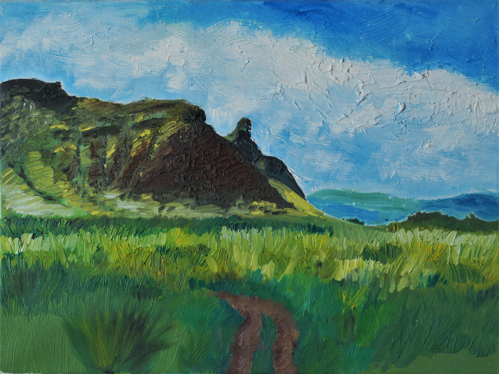
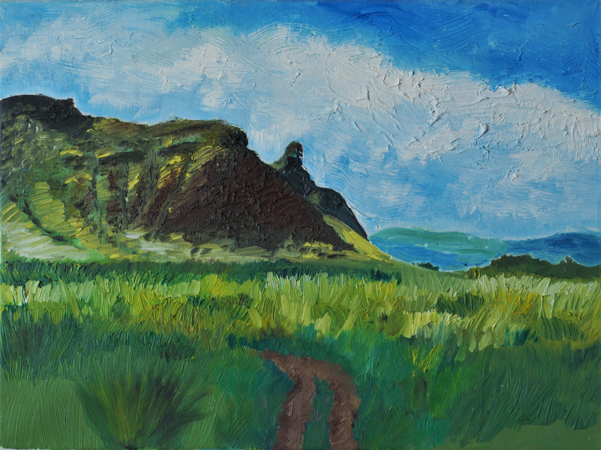

Умиротворение
Хакасии
 

 2016 г. Холст на подрамнике 30х40, масло
С детства я также занимаюсь любительской фотографией. Данную работу я писала
2016 г. Холст на подрамнике 30х40, масло
С детства я также занимаюсь любительской фотографией. Данную работу я писала
с фотографии, которую сделала в Хакасии.
Мы с родителями часто ездили в Хакасию летом. Ее пейзажи казались мне
магическими и таинственными. Там было гораздо веселее, чем в городе. Я скучала
по тем местам и решила написать картину.
Работа получилась эмоциональной и контрастной. Оттенки темных туч, мазками
перетекающие друг в друга. Яркая вспышка молнии. Трава, взъерошенная
порывами ветра.
Много солнечного света, сочная и острая зеленая трава. Голубое небо, по которому
растянутыми ветром белыми мазками плывут облака. И аромат степных трав,
который, вдохнув однажды, запомнишь навсегда. Картина получилась динамичной
и фактурной, по-настоящему летней.